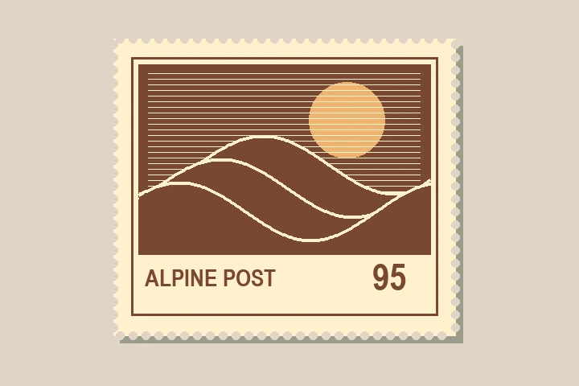
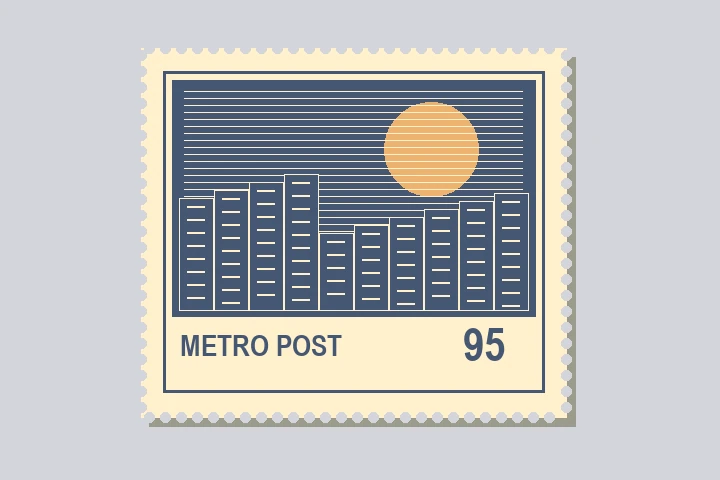

Post Club — Portfolio.exe
▁
作品 (W)
操作 (S)
关于 (A)
联系 (C)
GitHub
✳
POST CLUB
Post
Club
.
想象旅行邮局
把海岸、山脊和城市剪影印在齿孔之间。挑一张旅行邮票，盖上它离开邮局时的第一枚戳。
打开旅行邮册
STAMP ALBUM
新票
样本
海岸邮路
山地邮路
城市邮路
盖上邮戳
C:\Studio\Post
3 files · v1.0.0
旅行邮册 — Post
▁
Stamp album
.
旅行邮册
Coast Post
海岸邮路

Alpine Post
山地邮路

Metro Post
城市邮路
八个主题桌面
平面设计
城市摄影
电子音乐
植物标本
建筑模型
陶器釉色
旅行邮票
星座图谱
恢复主窗口
打开作品窗口
×
 Post Club — Portfolio.exe
Post Club — Portfolio.exe
 旅行邮册 — PostPost Club — Portfolio.exe旅行邮册 — Post
旅行邮册 — PostPost Club — Portfolio.exe旅行邮册 — Post 电子音乐
电子音乐 植物标本
植物标本 旅行邮票
旅行邮票